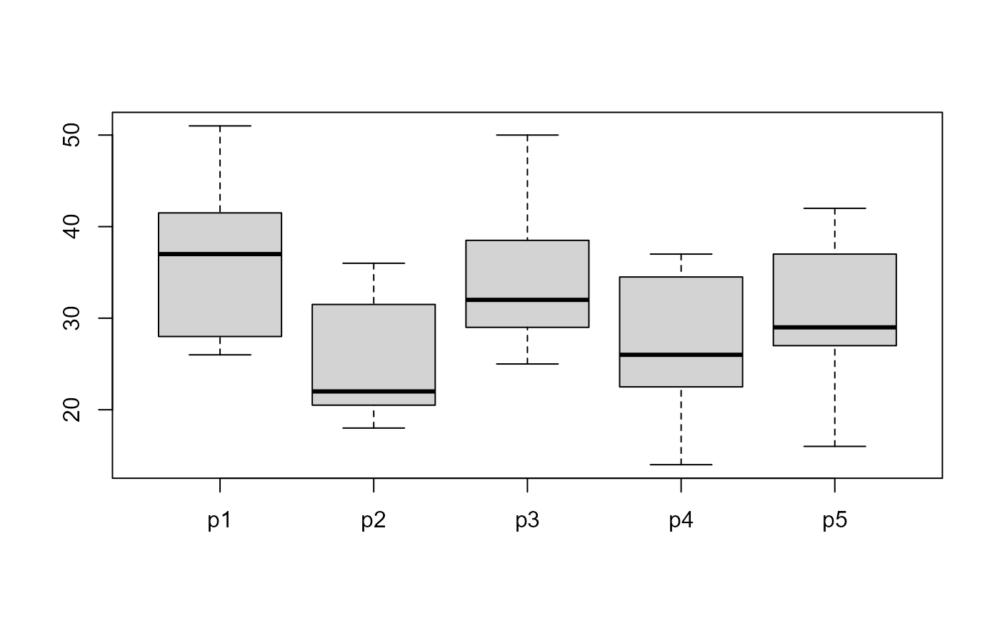
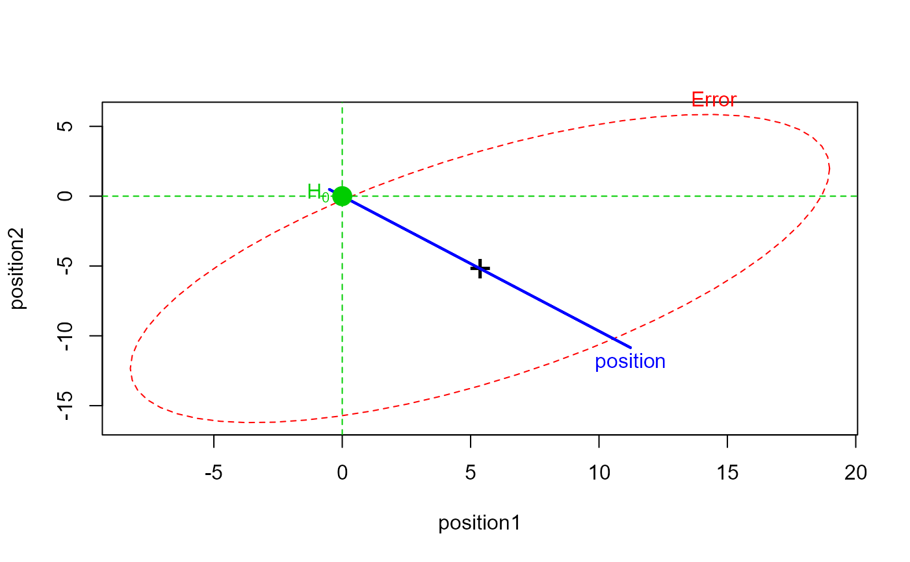
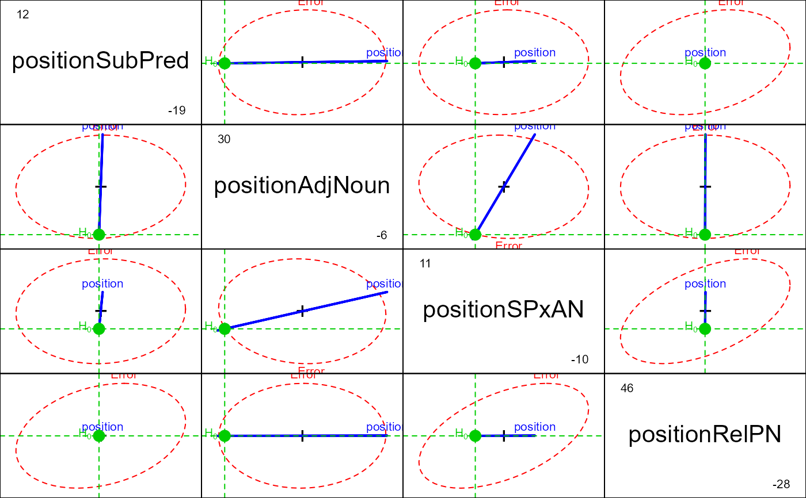
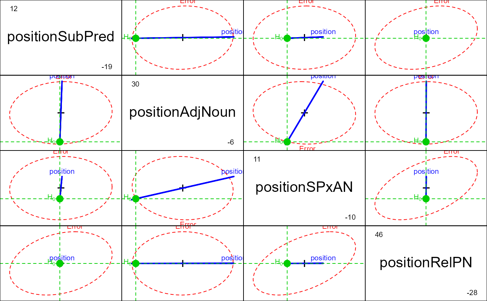

Data from a probe experiment testing whether immediate memory for sentences is influenced by the phrase structure of the sentence. The data sets come from Timm (1975), Ex. 3.14 and Ex. 3.16 (p.244)
Format
Probe1: A data frame with 11 observations on the following 5 variables.
p1speed at position 1
p2speed at position 2
p3speed at position 3
p4speed at position 4
p5speed at position 5
Probe2: A data frame with 20 observations on the following 6 variables.
stmShort term memory capacity: a factor with levels
HighLowp1speed at position 1
p2speed at position 2
p3speed at position 3
p4speed at position 4
p5speed at position 5
Source
Timm, N. (1975) Multivariate analysis, with applications in education and psychology Brooks/Cole.
Details
Procedure: Subjects listened to tape-recorded sentences. Each sentence was followed by a "probe word" from one of 5 positions within the sentence. The subject had to respond with the word which immediately followed the probe word in the sentence. The dependent measure is response speed = k(1/reaction time).
Sample sentence:
* The tall man met the young girl who got the new hat.
Pos'ns: 1 2 3 4 5
Function: ADJ1 SUBJ ADJ2 OBJ REL.PN
In Probe2, there are two groups of subjects, pre-selected on a test
of short term memory.
These data sets (fictitious) are used as examples of single-sample and two-sample profile analysis or simple repeated measure designs with structured contrasts.
Examples
data(Probe1)
boxplot(Probe1)

pmod1 <- lm(cbind(p1,p2,p3,p4,p5) ~ 1, data=Probe1)
idata <- data.frame(position=factor(1:5))
library(car)
(pmod1.aov <- car::Anova(pmod1, idata=idata, idesign=~position))
#> Note: model has only an intercept; equivalent type-III tests substituted.
#>
#> Type III Repeated Measures MANOVA Tests: Pillai test statistic
#> Df test stat approx F num Df den Df Pr(>F)
#> (Intercept) 1 0.96312 261.15 1 10 1.705e-08 ***
#> position 1 0.75177 5.30 4 7 0.02767 *
#> ---
#> Signif. codes: 0 '***' 0.001 '**' 0.01 '*' 0.05 '.' 0.1 ' ' 1
# using default contrasts (p5 as reference level)
heplot(pmod1, manova=pmod1.aov,
iterm="position",
type="III",
idata=idata, idesign=~position)

pairs(pmod1, manova=pmod1.aov,
iterm="position",
type="III",
idata=idata, idesign=~position)
 # contrasts for substantative hypotheses regarding
# sentence position effects
C <- matrix(c(
1, 1, -1, -1, 0,
1, -1, 1, -1, 0,
1, -1, -1, 1, 0,
1, 1, 1, 1, -4), 5, 4)
rownames(C) <- paste("p", 1:5, sep="")
colnames(C) <- c("SubPred", "AdjNoun", "SPxAN", "RelPN")
contrasts(idata$position)<- C
(pmod1.aov <- car::Anova(pmod1, idata=idata, idesign=~position))
#> Note: model has only an intercept; equivalent type-III tests substituted.
#>
#> Type III Repeated Measures MANOVA Tests: Pillai test statistic
#> Df test stat approx F num Df den Df Pr(>F)
#> (Intercept) 1 0.96312 261.15 1 10 1.705e-08 ***
#> position 1 0.75177 5.30 4 7 0.02767 *
#> ---
#> Signif. codes: 0 '***' 0.001 '**' 0.01 '*' 0.05 '.' 0.1 ' ' 1
heplot(pmod1, manova=pmod1.aov,
iterm="position", type="III", idata=idata, idesign=~position)
# contrasts for substantative hypotheses regarding
# sentence position effects
C <- matrix(c(
1, 1, -1, -1, 0,
1, -1, 1, -1, 0,
1, -1, -1, 1, 0,
1, 1, 1, 1, -4), 5, 4)
rownames(C) <- paste("p", 1:5, sep="")
colnames(C) <- c("SubPred", "AdjNoun", "SPxAN", "RelPN")
contrasts(idata$position)<- C
(pmod1.aov <- car::Anova(pmod1, idata=idata, idesign=~position))
#> Note: model has only an intercept; equivalent type-III tests substituted.
#>
#> Type III Repeated Measures MANOVA Tests: Pillai test statistic
#> Df test stat approx F num Df den Df Pr(>F)
#> (Intercept) 1 0.96312 261.15 1 10 1.705e-08 ***
#> position 1 0.75177 5.30 4 7 0.02767 *
#> ---
#> Signif. codes: 0 '***' 0.001 '**' 0.01 '*' 0.05 '.' 0.1 ' ' 1
heplot(pmod1, manova=pmod1.aov,
iterm="position", type="III", idata=idata, idesign=~position)
 pairs(pmod1, manova=pmod1.aov,
iterm="position", type="III", idata=idata, idesign=~position)

pairs(pmod1, manova=pmod1.aov,
iterm="position", type="III", idata=idata, idesign=~position)
